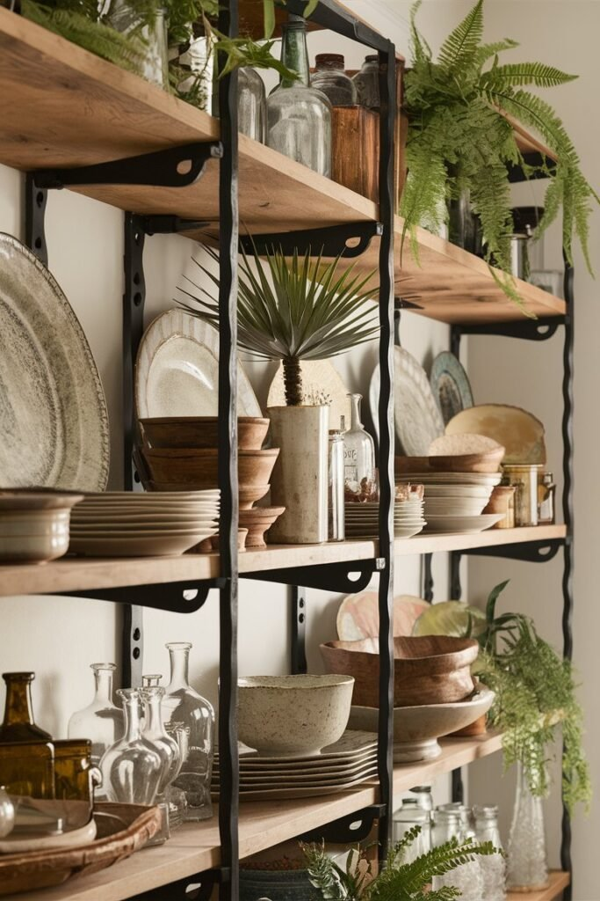
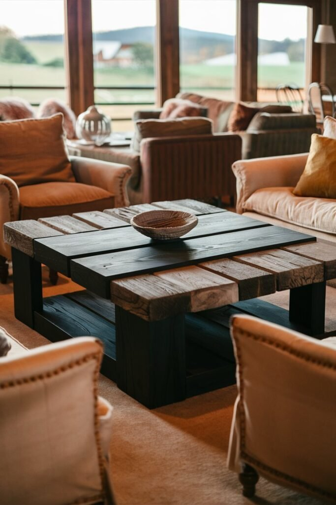
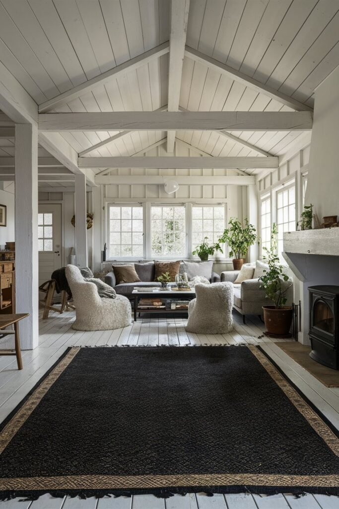
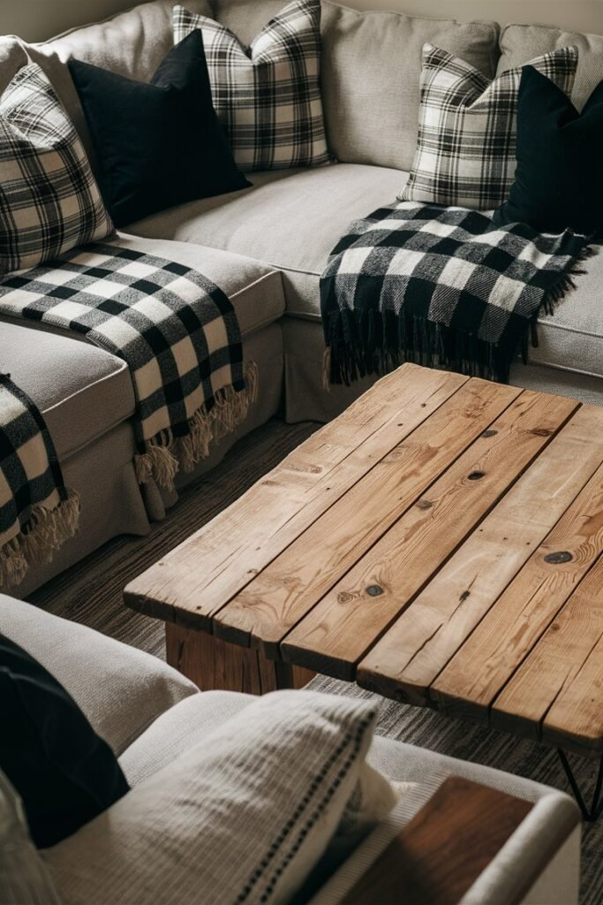
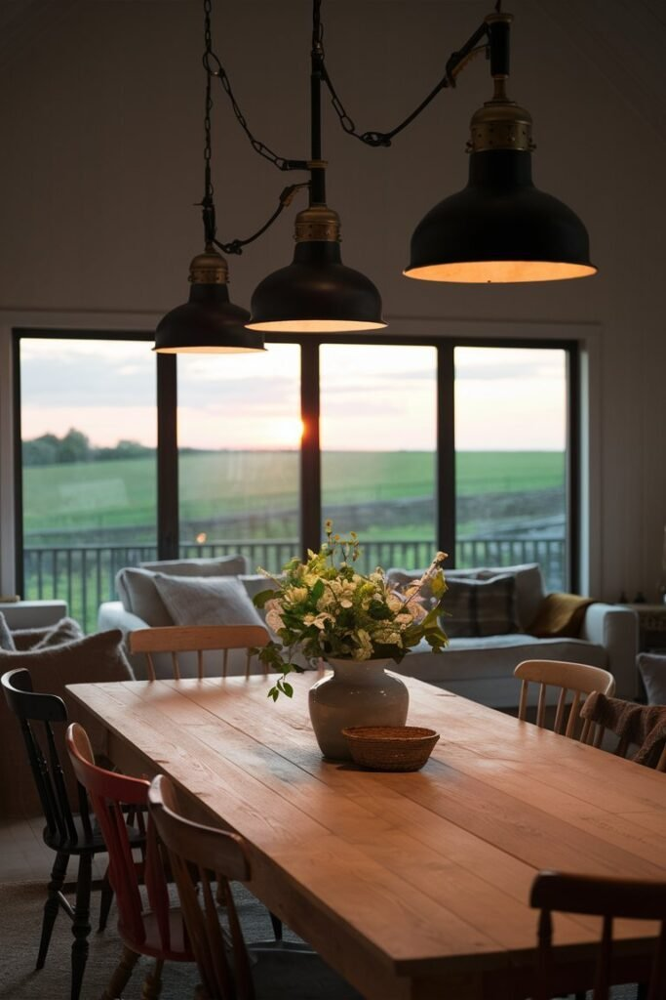
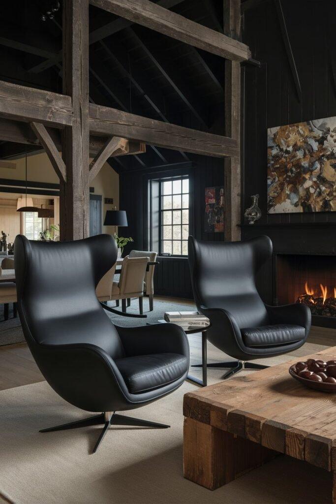
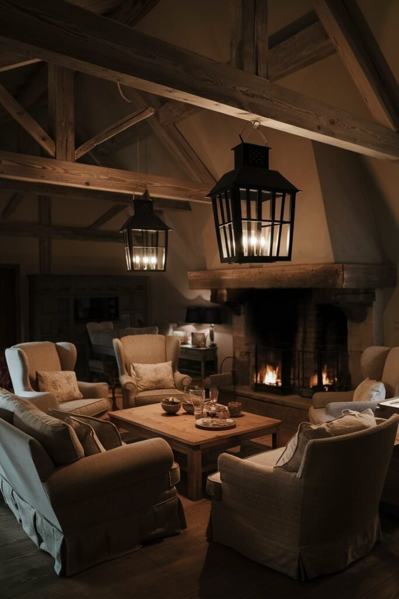
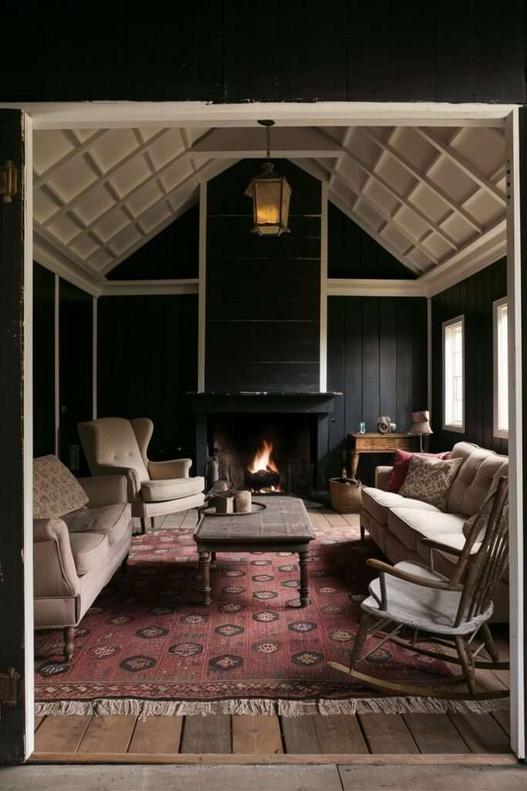
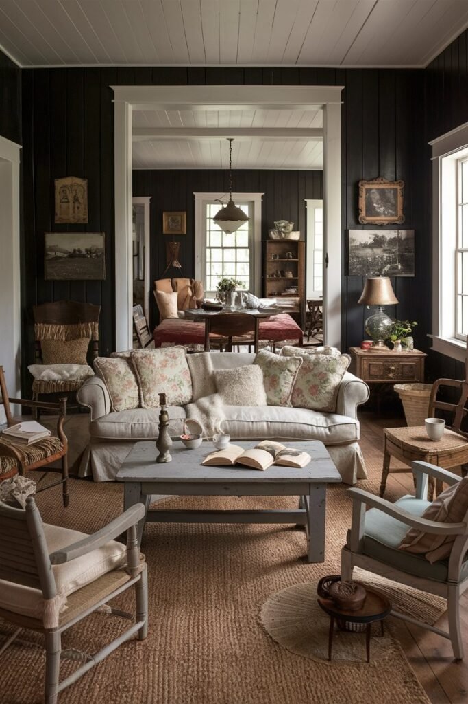
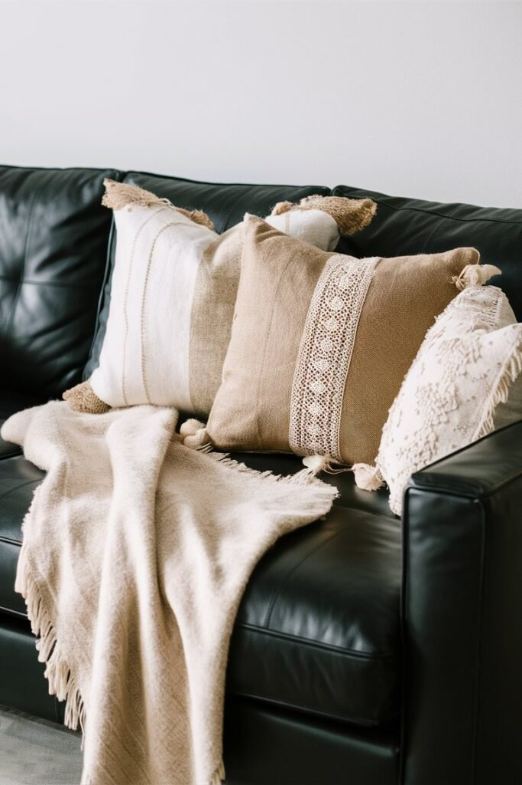

Black isn't the first color most people reach for in a farmhouse living room, but it does genuine work when used with intention.
Rather than canceling out the warmth farmhouse style depends on, black adds contrast and structure that makes the rest of the room's softer elements stand out even more.
None of the ideas below require committing to a full black room. Most work as individual additions, a chair, a rug, a set of light fixtures, layered into a space one piece at a time.

1. Hang Black Framed Artwork
A blank wall rarely does a farmhouse living room any favors, and black-framed art is a low-commitment, high-impact fix.
Bold black frames paired with softer, lighter artwork give the wall structure and contrast without overpowering the rest of the room's palette.
The combination keeps the look feeling like effortless chic rather than anything too heavy or severe.
2. Add Open Shelving With Black Accents
Open shelves with black brackets or frames combine form and function in a way closed cabinetry simply can't.
They give a collection of books, ceramics, or small decor somewhere to actually be seen, rather than tucked away.
The black hardware adds a bit of structure and contrast against whatever's displayed, keeping the shelving from reading as an afterthought.

3. Try a Black and Wood Coffee Table
A coffee table should do more than hold drinks, and a black and wood combination strikes a genuine balance between modern and rustic.
Black metal legs paired with a warm wood top, or the reverse, both read as understated elegance rather than a trend-driven choice.
Surrounded by cozy textures and soft lighting, it gives the room a farmhouse-chic feel with just enough edge to keep it from feeling too soft.

4. Anchor the Room With a Black Rug
Rugs are consistently underrated, and a black farmhouse rug does more for a room than its understated presence suggests.
It anchors the whole space, adds real warmth underfoot, and happens to hide everyday dirt far better than a lighter rug ever could.
It's one of those elements that quietly pulls a room together, making the rest of the styling look more intentional than it might actually be.

5. Layer In Plaid Throw Pillows
Throw pillows genuinely matter, and black and white plaid ones are close to farmhouse shorthand at this point.
They're bold, charming, and remarkably easy to mix and match with whatever else is already on the sofa.
Layering in a few solid-colored pillows or textured throws alongside the plaid keeps the whole arrangement cozy rather than tipping into a full checkerboard look.

6. Mix Black and Brass Lighting
Black and brass together is one of the more reliable farmhouse lighting pairings available.
A pendant light, chandelier, or wall sconce in this combination takes a room's lighting up a noticeable level, whether it's installed in the kitchen or the living room itself.
A brass-accented pendant in particular tends to make a space feel considerably more polished than its actual cost would suggest.

7. Add a Black Accent Chair
For a quick way to elevate a room without a full redo, a black accent chair does a surprising amount of work.
Paired with a plaid pillow or a chunky knit blanket, it reads as a genuine statement piece rather than just another chair.
Placed near a reading lamp, it instantly becomes a cozy corner worth actually using.

8. Light the Room With Black Lanterns
Lighting genuinely makes or breaks a room, and black farmhouse lanterns do a lot of that work on their own.
A matte black finish, glass panes, and a bit of old-school detailing bring charm and coziness in equal measure, without reading as overly rustic or dated.
The soft glow they throw, with shadows dancing against shiplap and beams, adds a warmth that overhead lighting alone rarely manages.

9. Paint the Walls Black and White
Painting a wall black feels like a leap, but pairing black walls with white trim is a bold move that consistently pays off.
Rustic wood beams or vintage light fixtures layered against that contrast push the room toward a moody farmhouse feel rather than anything stark.
White trim framing each corner against black walls creates a crisp outline that reads as chic without losing the warmth of the rest of the room.


10. Go Bold With a Black Leather Sofa
A black leather sofa is one of the bolder moves on this list, but it tends to pay off.
It brings a cool, classic edge to a farmhouse living room, and topping it with rustic wood furniture, woven throws, and textured pillows softens the look while adding real comfort.
A secondhand piece, refreshed with a bit of care, can become the room's defining statement without the cost of buying new.

Start Small and Build the Contrast
Adding black to a farmhouse living room doesn't mean sacrificing warmth. It means turning up the style without losing the lived-in charm the style is built on.
Starting small, with a throw pillow or a framed print, then building up to a statement chair or a full lighting swap, makes it easy to find the right balance between bold and inviting.